一份新人视角的生财探索指南
来源：https://airv1tukxm.feishu.cn/docx/FgeSdrK4no16NRxepk5cnXUVnvf
本文分别从以下几个角度展开我对生财的思考：
一些正反馈
我的困惑与思考
生财新手期高效探索指南
我的副业路径规划
我的学习工具分享
一、一些正反馈
- 2 个中标的风向标，有圈友反馈说通过此方法一天引流了 4、500 人。
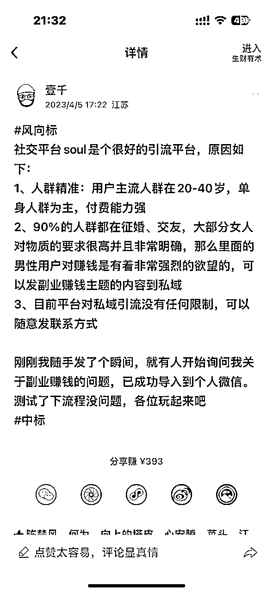
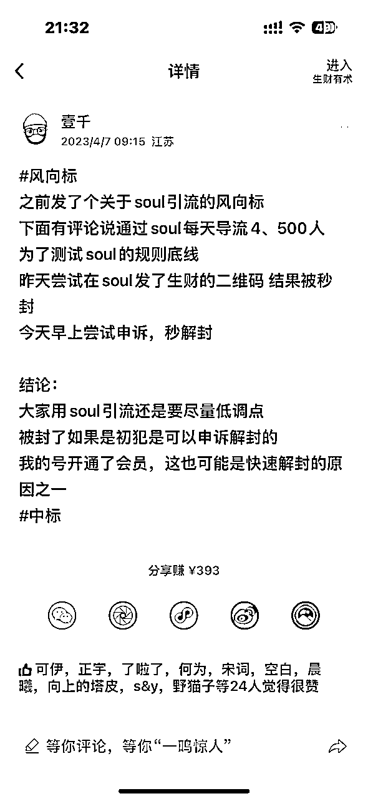
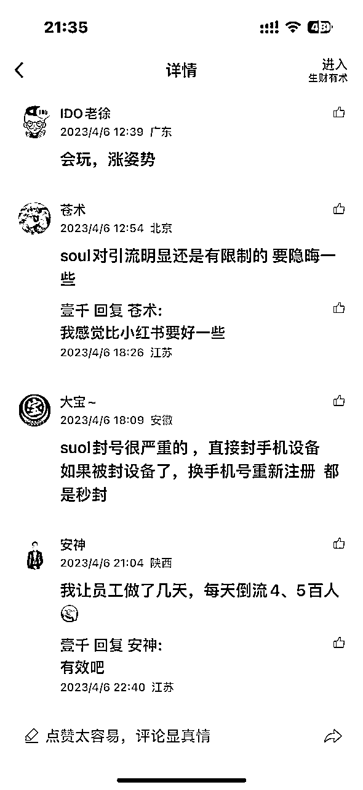
- 一篇新人贴，被亦仁大大引用（ 此处有点社死 ），帖子侧面帮助星主优化了生财推广的流程（ 小小得意一下 ）。
加入生财的第 3 天，我做好了我的副业计划
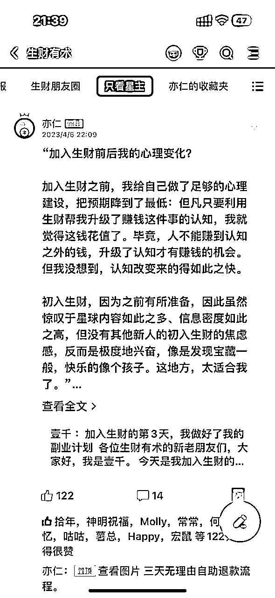
- 为生财有术拉新一人（ 临时起意，我继续努力 ）
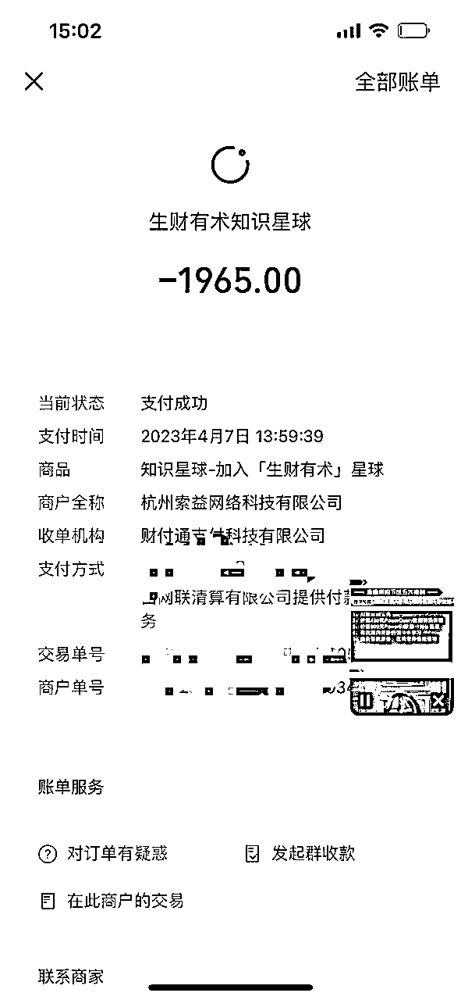
- 在@IDO 老徐的生财 418 圈友群分享自己学习的心得、工具，收到圈友的红包感谢。万万没想到，我加入生财的第一桶金居然是来自生财圈友的红包😂😂😂
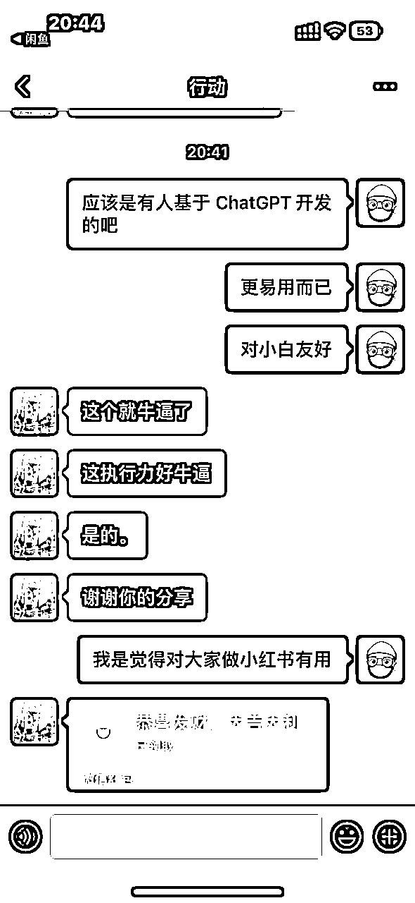
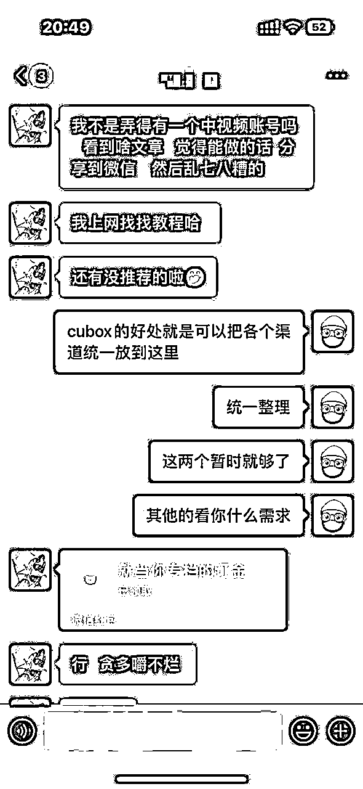
- 还有因为积极分享收获的一票可爱的生财好友，解锁了链接他人的快乐！
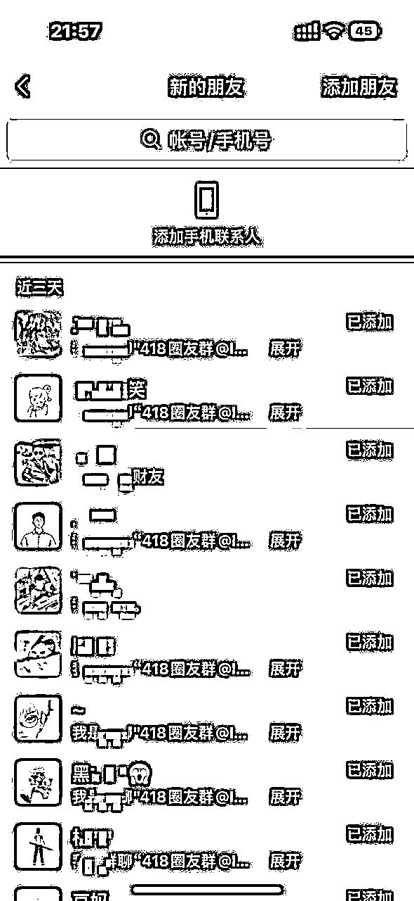
还记得在进入生财的第一天，在新人指南中刷到这样一段话：
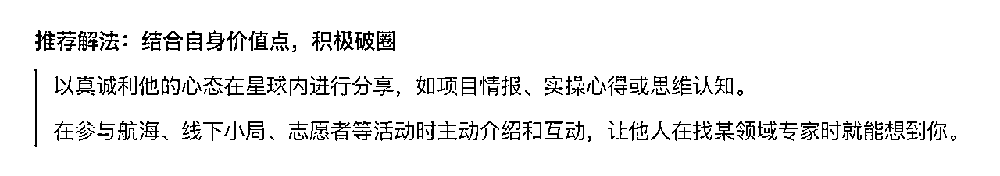
经过这几天的实践以及收到的反馈，才真正理解了“利他就是利己”这句话的真正含义，在这里再次感谢我的生财领路人@IDO 老徐的鼓励与引导。
插播小建议：学到新知识，别忘了思考和分享。不要追求完美，也不要妄自菲薄，不完整的思考也是有价值的。重要的是马上行动、快速迭代，持续获得正反馈。
二、我的困惑与思考
加入生财的第一天，我其实是没有焦虑的，根据@IDO老徐给的建议，制定了初步的学习策略：
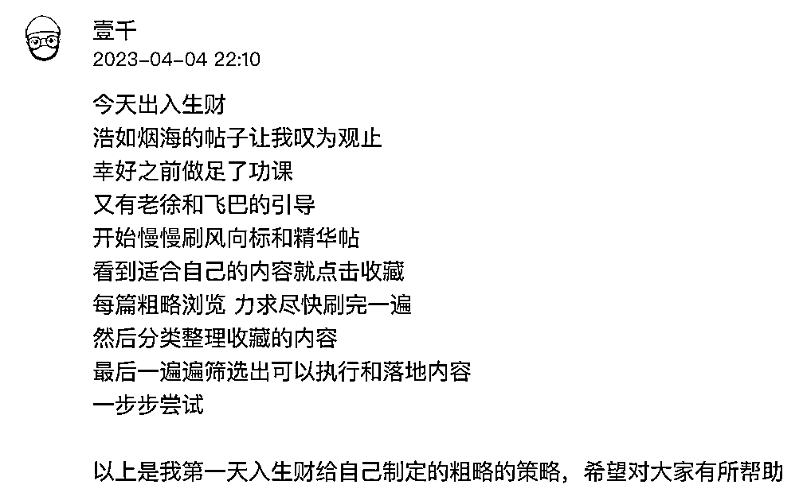
但实在是低估了生财精华贴的深度和数量，刷了几十条我便感觉不对劲，星球的优质内容太多了，每一篇精华贴都是前辈们的倾囊相授，内容全面、细致又深入。我这么没头没脑地刷帖，还是像只无头苍蝇一样。此时我突然想起了《生财有术｜第七期新人指南》，当即决定还是老老实实的看完新人指南再说！
新人指南确实贴心，把新手探索生财的过程分成四个阶段，每个阶段又有相应的推荐阅读，但是在阅读“推荐阅读”的过程中，我踩了个大坑：
推荐阅读里的每篇帖子都让我受益匪浅，但每篇精华帖的结尾又“附赠”了新的推荐阅读。那些标题十分具有诱惑力，想必内容一定非常有用。作为一个新手，我很难抵住诱惑不去点开。就这样，我被层层“套娃”，巨大的内容焦虑再次向我袭来。
插播小建议：在阅读新人指南的时候，先快速阅读一遍一级页面的内容，对生财有个大致的了解。读完后，再阅读第二遍，此时可以点开推荐阅读的帖子进行阅读，每篇推荐贴读完就收手，回到一级页面阅读其他推荐贴。
当我意识到自己被套娃，我强迫自己停下来，开始思考我应该如何使用生财。同时在@IDO 老徐的社群里，我观察到，不止我一个人有这样的感受：
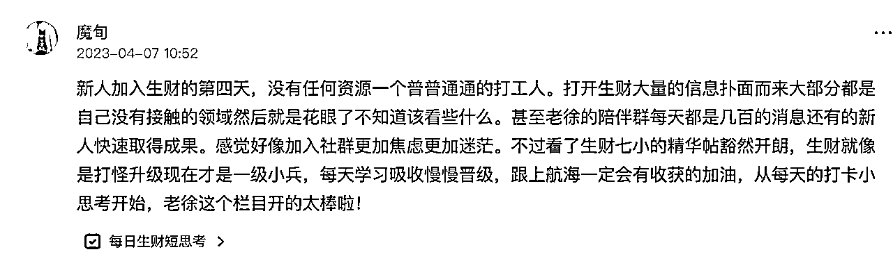
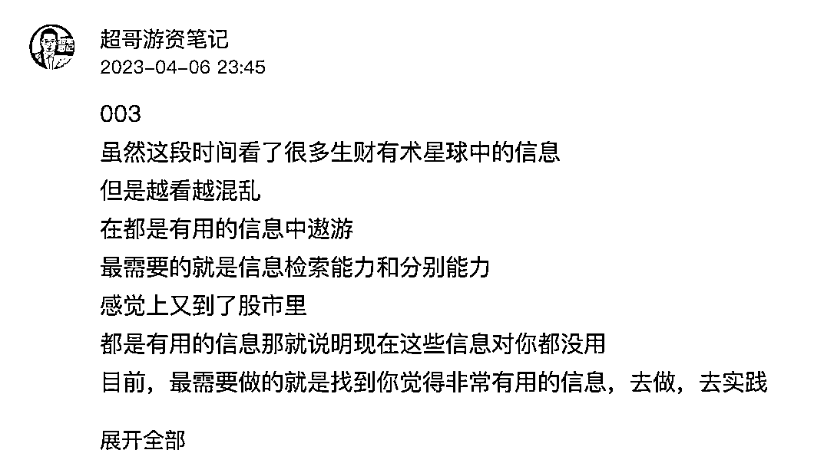
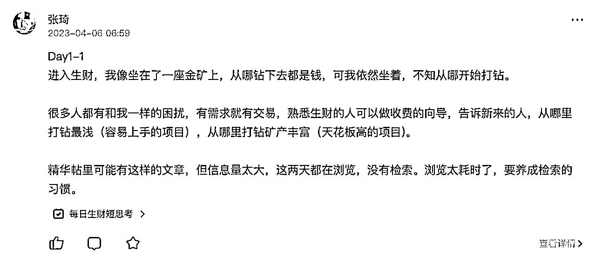
在我正迷茫的时候，无意中发现这篇帖子《想体验生财有术，可先看这 28 篇精华帖》，其中有几篇帖子对我的启发很大，可以说升级了我的认知，其中有些内容甚至是互相验证的：
- 在杨涛的《 》中，我学到了应该根据自己的天赋梳理方向，高效使用生财，而不是像个无头苍蝇一样，什么都想试，什么都想学。
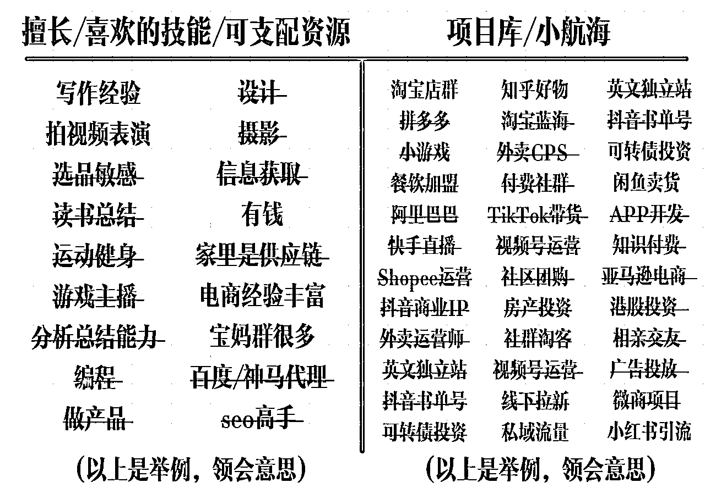
- 在王小新的《圈友说：我是真把生财用明白了！—生财使用方法论》中，我学到了在生财应该带着问题找答案，搜索—筛选—拆解—应用，还发现了高效使用生财的神器 生财有术 精华贴索引工具 2.0 （ 后来发现首页置顶贴就有，我居然没看到，惭愧 ）。
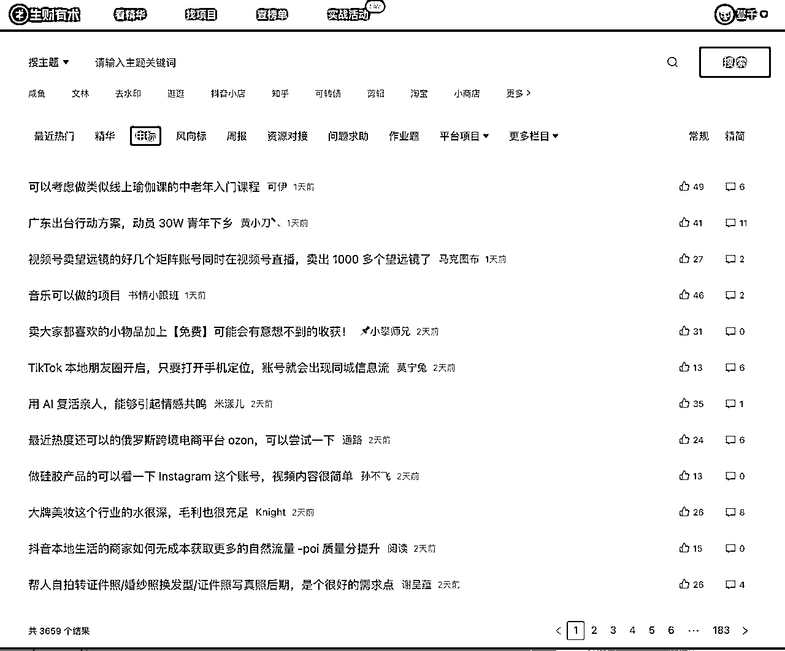
- 在亦仁的《普通人不知道如何做什么的小故事思考》中，我学到了如果找不到自己喜欢和擅长的事情，那就找自己不讨厌去干的事情，边学边干边分享。这句话破除了我一直以来的魔障：我没有什么天赋，所以没有什么值得分享的。受其启发，我开始在 soul 分享我的在生财的所思所得，并很快收到反馈，引流了 2 人到我的微信。继而产生启发，发了 2 个风向标并中标，成功帮助到生财圈友（也见识到了圈友超强的反应速度和执行力）。
- 在亦仁的《赚 30 万的项目和赚 300 万的项目有什么区别？》中，我学到了不要小看任何一个小项目，越好上手的项目往往越容易快速复制、产生规模效应，继而变成大项目。
- 在港妈金侣的《无专业，无定位，无爱好的全职妈妈，20 个月，变现 170 万+的经历分享》中，最让我惊叹的是她报名她人的课程，听课不到 3 天的时间，就同步启动她自己的课程招募，边学边教，做了 13 期。这与亦仁在《普通人不知道如何做什么的小故事思考》中提到的“边学边教，每天学每天教”的做法不谋而合。
- 在李鲆的《我是怎样用生财赚到 1000 万的》中，我学到了可以从“知识付费”和“带货分销”两个方向发力成为“超级个体“，更坚定了我做知识付费的决心，但短期也可以通过带货分销赚钱，于是我为生财拉新赚到了第一份佣金。
......
在生财短短几天，真的受益良多。阅读到精彩的文章，不禁拍案叫绝。在此感谢诸位前辈的无私分享。
插播小建议：像我一样的生财小白，可以考虑优先阅读能够帮助提升赚钱认知的帖子，为未来的搞钱之旅，打下坚实的基础，不至于迷失在茫茫的生财海洋之中。
三、新手期生财高效探索指南
- 初入生财必读，传送门《生财有术｜第七期新人指南》
进入生财第一件事，读完新手指南，。建议阅读不要过分深入，仅做大概了解即可，以免迷失在精华帖里徒生焦虑。
- 提升生财认知，传送门《想体验生财有术，可先看这 28 篇精华帖》
对生财小白来说，最重要的事，是先搞明白副业赚钱的底层道理，快速提升认知。这篇贴子对我帮助很大，也推荐你阅读，重点推荐阅读新手篇和人物篇。
- 阅读航海手册，传送门《 生财有术 · 航海实战 》
对小白来说，与其迷失在精华帖里，不如先了解生财有哪些项目可以做。
在航海实战里，往期的实战活动已经为小白们分门别类整理好。可以通过阅读对应的航海手册，找到自己喜欢的、适合自己的项目，再按图索骥，使用 生财有术 精华贴索引工具 2.0 搜索与自己问题相关的精华帖，更加高效的探索生财宝库。
- 航海手册建议快速阅读，因为真的是保姆级教程，篇幅非常非常非常长。
- 如果没有明确目的，建议都刷一遍，用排除法找到适合自己的项目。
- 筛选出自己打算做的项目后，用思维导图拆解项目，逐步尝试。
- 航海手册路线见下图：
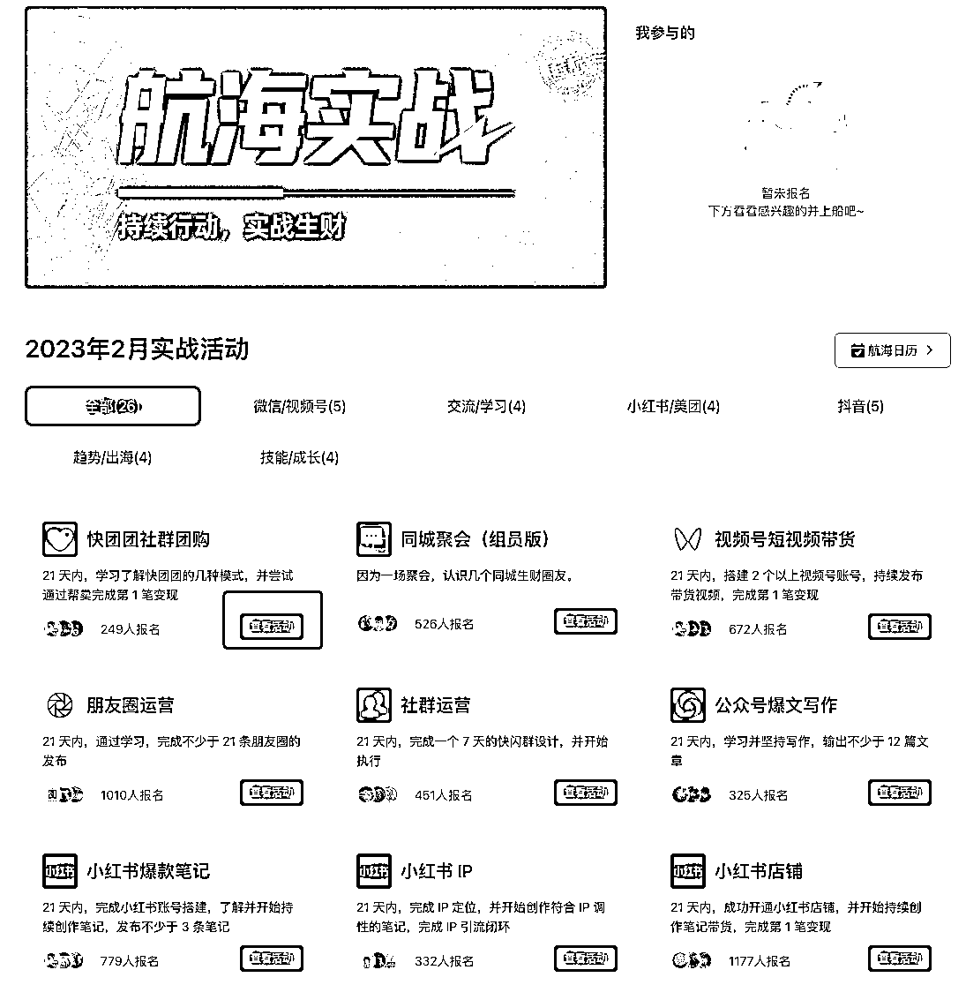
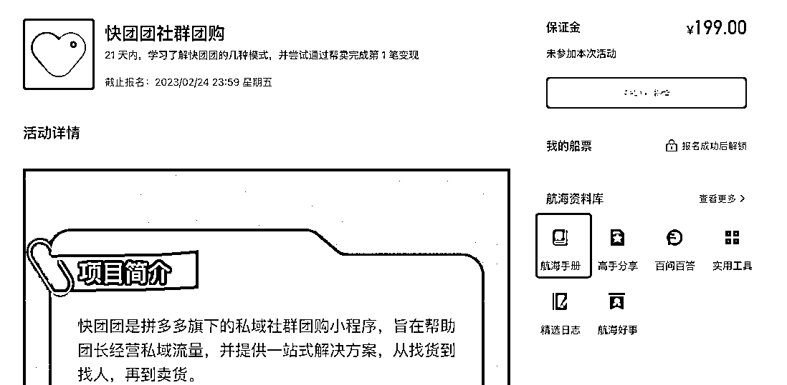
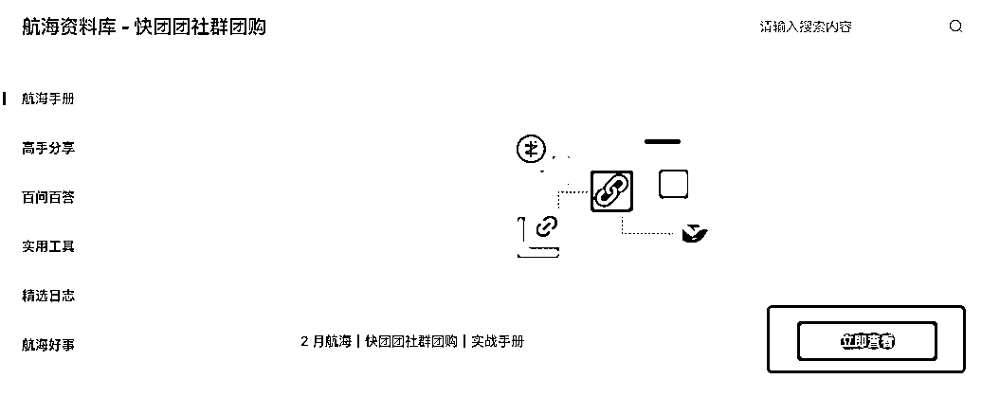
- 如果还是有些迷惑，可以参考这篇贴子 ，里面有亦仁对航海各个项目介绍，也可借鉴圈友的思路。
- 我个人的初步分类，仅供参考
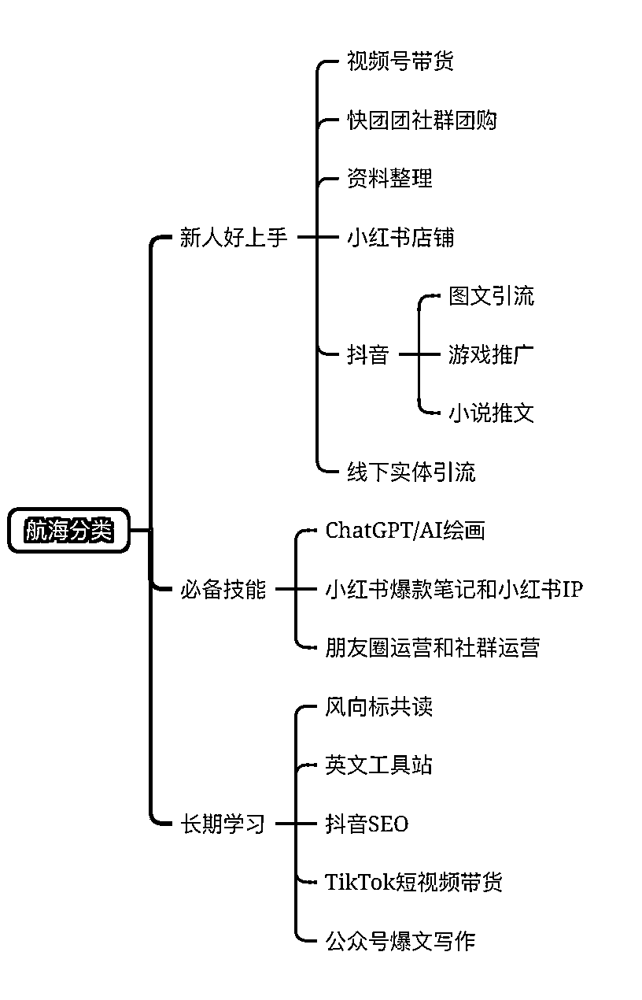
四、我的副业路径
- 选择短期可变现的项目，玩命执行！执行！执行！
- 通过实践总结自己的方法论，通过社交平台分享，打造个人IP，积累粉丝。
- 打磨自己付费课程，做知识付费。
五、我的学习工具分享
本人就职于一家餐饮连锁，负责公司的项目策划以及营销体系的搭建。因工作原因，常常需要学习新领域、新知识，在此过程中总结了一套自己的碎片知识学习和体系搭建的方法论，不敢藏拙，希望能对新人们有些许帮助。
这套方法论涉及到以下几个我常用的软件，大家可以先下载备用：
- flomo · 浮墨笔记
- Cubox
- Xmind
- 语雀
软件介绍
- flomo 是一款可以帮你快速记录的短笔记 App，全平台通用，以记录简单文字为主。借助它可以很方便的记录学到的碎片知识、灵光乍现的想法。再通过标签将这些知识分类，方便后续查找。
- Cubox 是一款信息收集 App，一站式信息收集、阅读、管理和回顾，通过它构建个人知识库。Cubox 功能非常强大，这里不一一展开，大家可以移步官网进行了解。他的强大之处在于，可以把任何地方看到的内容一键收藏至 Cubox，微信聊天记录、文章、照片、网站、文件等等，汇集一处统一阅读（不支持阅读星球原生贴）。
- Xmind 是国内著名的思维导图 App，可以帮助你梳理思路、搭建知识框架。
- 语雀是一款知识管理 App，可以把学到的碎片知识串联起来写成文章，再把文章按照逻辑框架组合形成知识库。
我的使用方法和技巧（以遨游生财举例）
- flomo 记录碎片
我在刷生财精华贴的时候，一旦看到让我觉得共鸣的片段，便会记录下来。在记录的时候，我会简化作者的文字，尽量用自己的理解重新组织语言。这样一来，每一条笔记都可以作为内容平台的灵感来源（这里呼应上了亦仁的边学边分享的理念）。
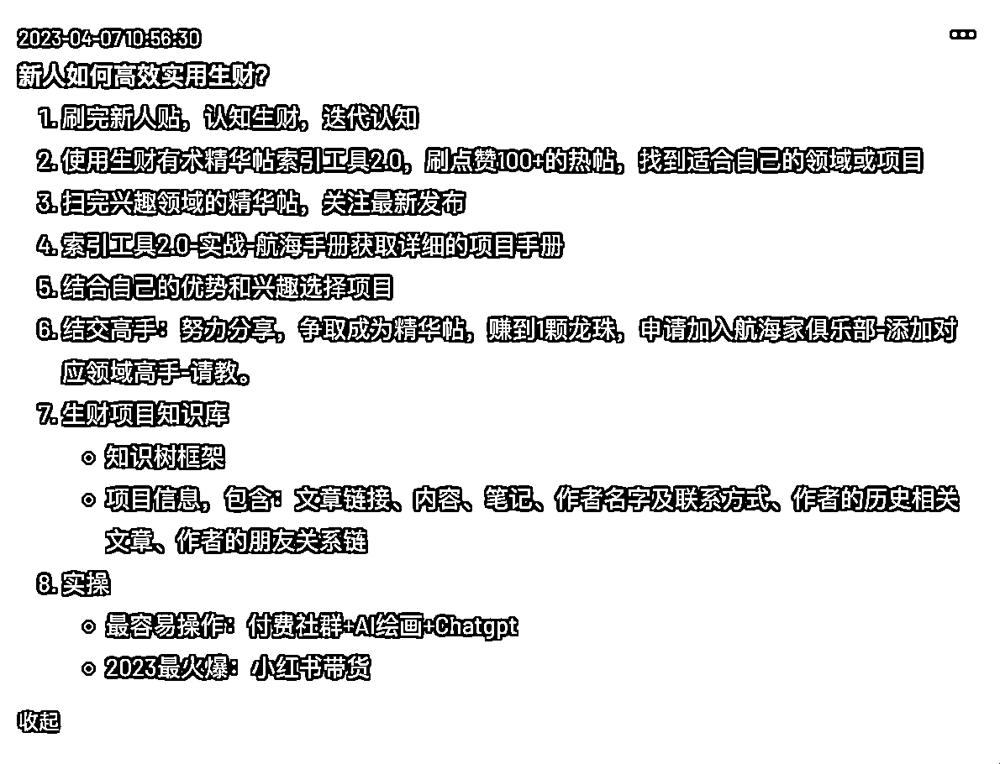
- Cubox 收藏文章
上述内容适合记录认知类的知识，当遇见高手分享的详细操作攻略怎么办？漏掉任何细节都可能拿不到预期的结果，这时候Cubox 就派上用场了。
我一般喜欢用 google 浏览器阅读精华贴，看到那些当下用不到但未来极有可能会用到的内容，我会用 Cubox 的浏览器插件一键收藏、并在特定时间集中二次阅读和拆解，阅读完分类保存，便于日后再次查阅（这里我还未走到分类那一步）。
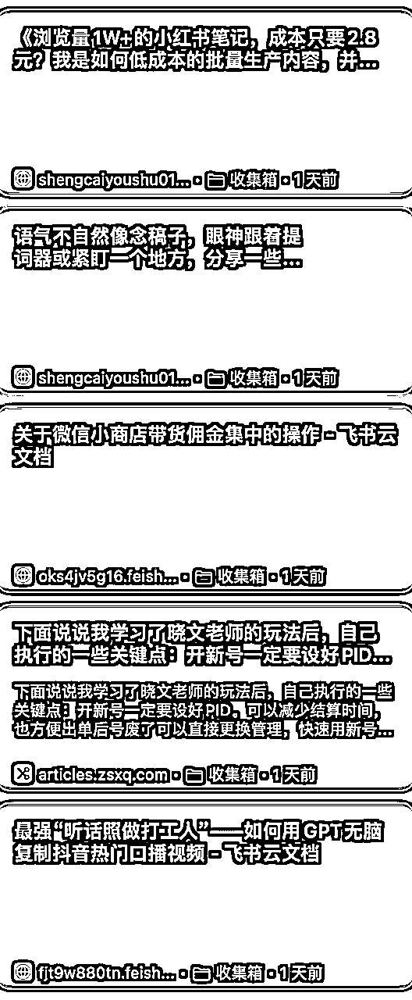
- Xmind 梳理逻辑框架
当大家在生财找到自己的定位和项目方向之后，可以使用 Xmind 梳理这个定位或项目所需的技能和步骤，给自己列一个大纲。下图是我梳理的“品牌策划”框架的部分内容，形式可以作为参考。
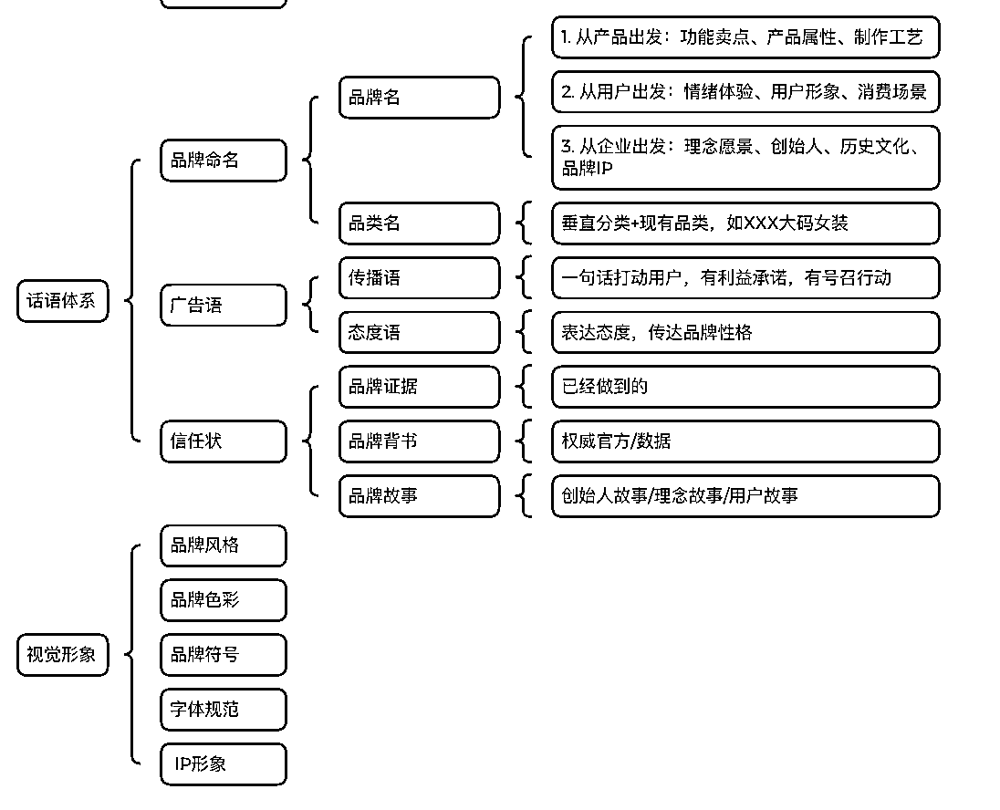
- 语雀搭建知识库
梳理完框架之后，我们需要把之前记录在 flomo 的碎片知识分门别类的填充进去，此时思维导图就不合适了。
- 这时候我们打开语雀，新建一个知识库，在知识库中新建一篇篇文档，文档按照 xmind 中梳理的框架排列。
- 然后把知识碎片的内容填充到对应的文档中，最后再用自己的语言把一个个知识碎片按照你自己的理解组织成你自己的语言、举一反三，形成通顺的文章。
- 把自己原创的文章发布到公众号、或者写成小报童的付费专栏。
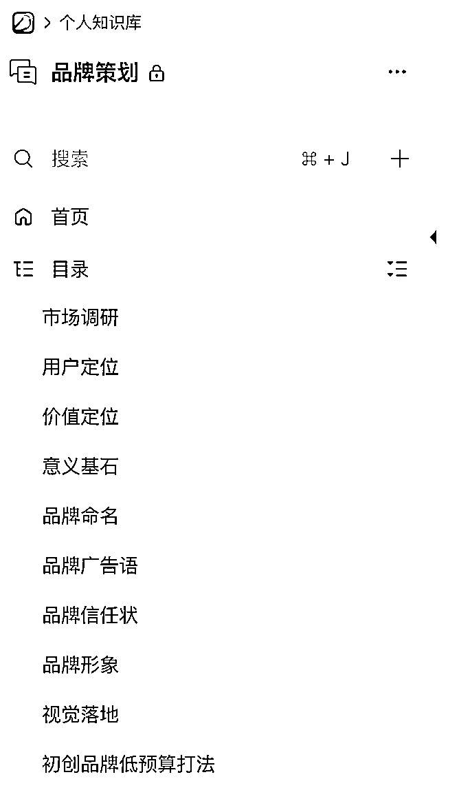
以上是我从一个生财新人的视角，输出的一些浅薄想法。
希望能够给和我一样迷茫的生财萌新们一些帮助和启发，欢迎交流～